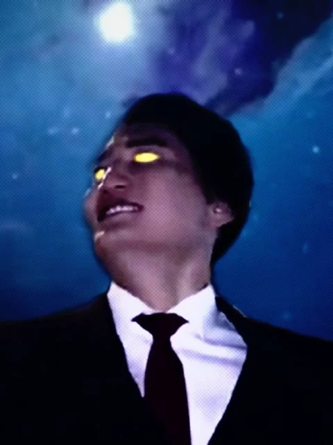

OFB(Ohio Final Boss) is the final boss of the state of ohio. He is a super strong entity in the memeverse but he has humble beginnings.
Before he was the OFB he was a normal minimum wage employee in Michigan. He worked at a walmart and had a wife and two kids. But every night he had something calling him. Telling him to go south out of Michigan and into OHIO. He ignored these calls and continued his work. But the signals got stronger and stronger until he couldn't take it anymore. He took his family and went into Ohio. He was welcomed by Ohio itself and was corrupted. He was able to withstand the influnce of Ohio and managed to tame it. HE now has all the power of Ohio put into his own being of existence his soul. In simple terms he fused with Ohio. This explains why he is the final boss he is ohio from the grass to the very atoms and to the concept of it.
The OFB(Ohio Final boss) is a super strong meme. He is able to easily warp space and time. One of his greatest powers is calamity and chaos control(not the sonic chaos control). This means he is able to create choas and destruction anywhere he pleases as Ohio is the very concept of chaos. Since he is fused with ohio he is immortal as long as chaos exists so he is unkillable. He himself is a concept in physical form. Another one if his abilities MADE IN OHIO lets him control all of Ohio's calamity and use it as energy. The strongest of his abilities WONDER OF OHIO lets him curse any thing in existence with infinte choas even after death they will still face choas until OFB lifts the curse. This attack can even curse intagible, inorganic, and higher dimensial things at the same time.